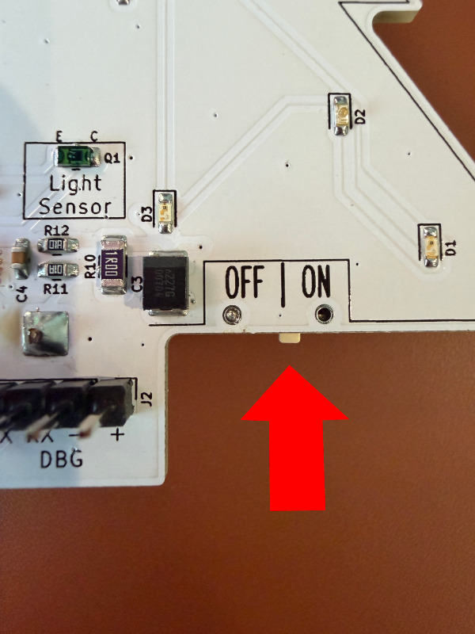
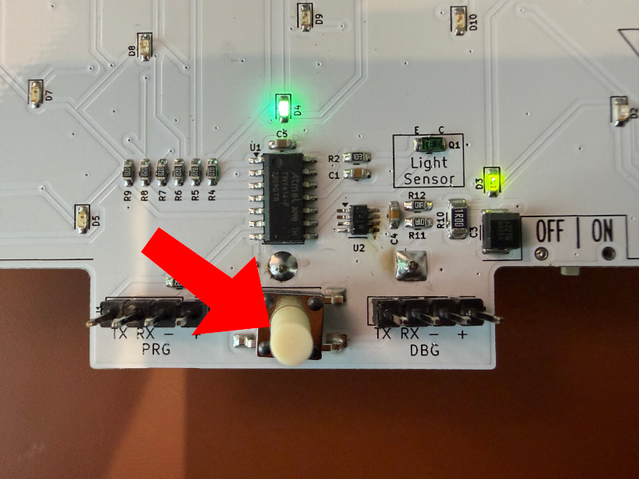
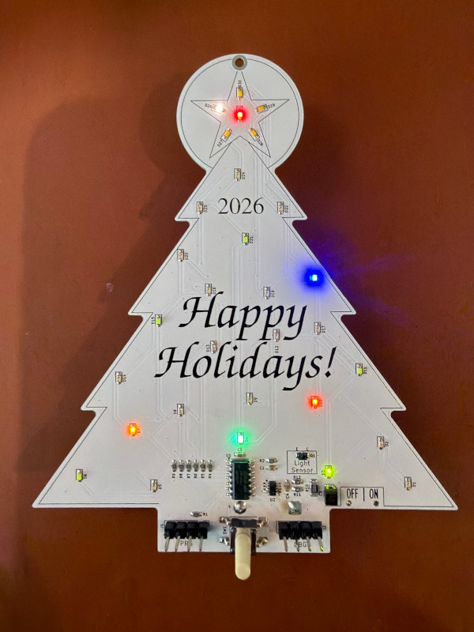
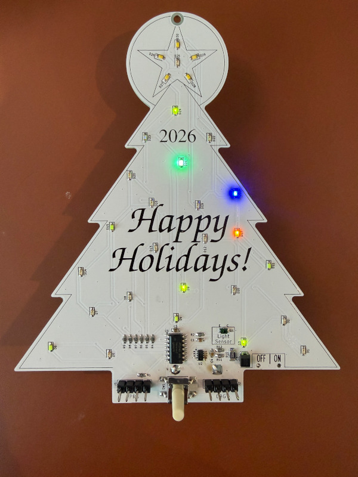
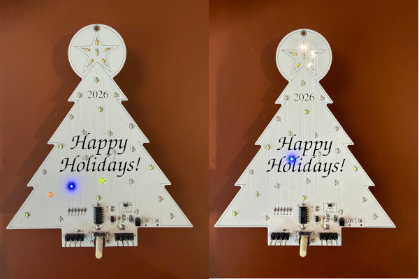

User Guide for the Custom LED Ornament
1. Install 3x AAA batteries in the battery holder on the back of the ornament - with the negative (flat) side facing the spring in each compartment.
2. Locate the power switch on the right-hand side of the ornament, on the underside of the branches.
3. Slide the switch to the "on" position.
4. The ornament will immediately begin operating in its default mode, alternating between "twinkling" and showing the advent calendar display.

Figure 1: Power Button Location
To get into setup mode:
To change the date:
Once you're on the correct LED for the day of the month:

Figure 2: Button for entering setup mode (advent day / brightness)
Note: The date setting process is designed to be intuitive and requires only a few simple button presses.
To adjust the brightness level:

Figure 3: Brightness Adjustment Interface
Note: The date and brightness settings are saved to non-volatile memory, so they will persist after power-off.
The ornament operates in two distinct modes:
The ornament will always display a twinkling pattern that cycles through different LED combinations for approximately 30 seconds, at the chosen brightness level.

Figure 4: Twinkle Mode Animation
Every 30 seconds, the ornament enters Advent mode where it displays a special pattern that progresses through the days of Advent:

Figure 3: Advent Day Setting Interface
The ornament will turn on and run for 5 hours when you turn the power switch on the first time. It will automatically go into sleep mode after 5 hours, and turn back on again 24-hours from when you first turned it on - so that it will run at the same time each day without any user action.
To have it start at a different time each day, simply turn the ornament off by the switch, and turn it on at the time you'd like it to normally turn on by itself.
When the ornament is in sleep mode (no LEDs showing), pressing the button once will activate the ornament for 1 hour. This will not affect the normal auto-wake timing.
If the ornament is not responding as expected: